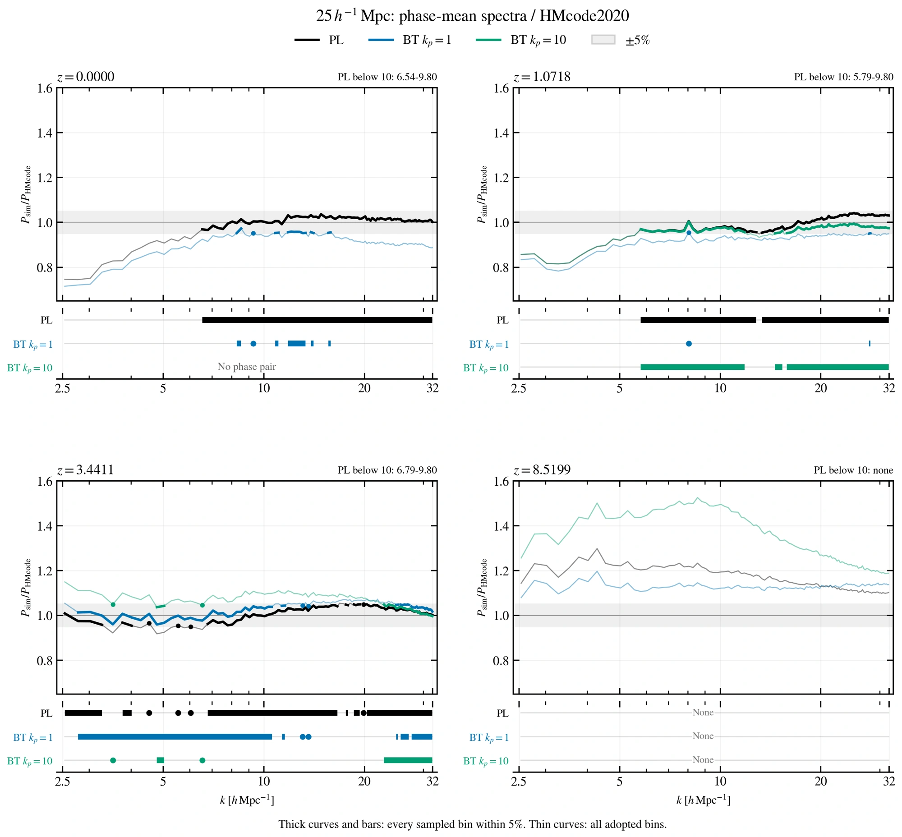
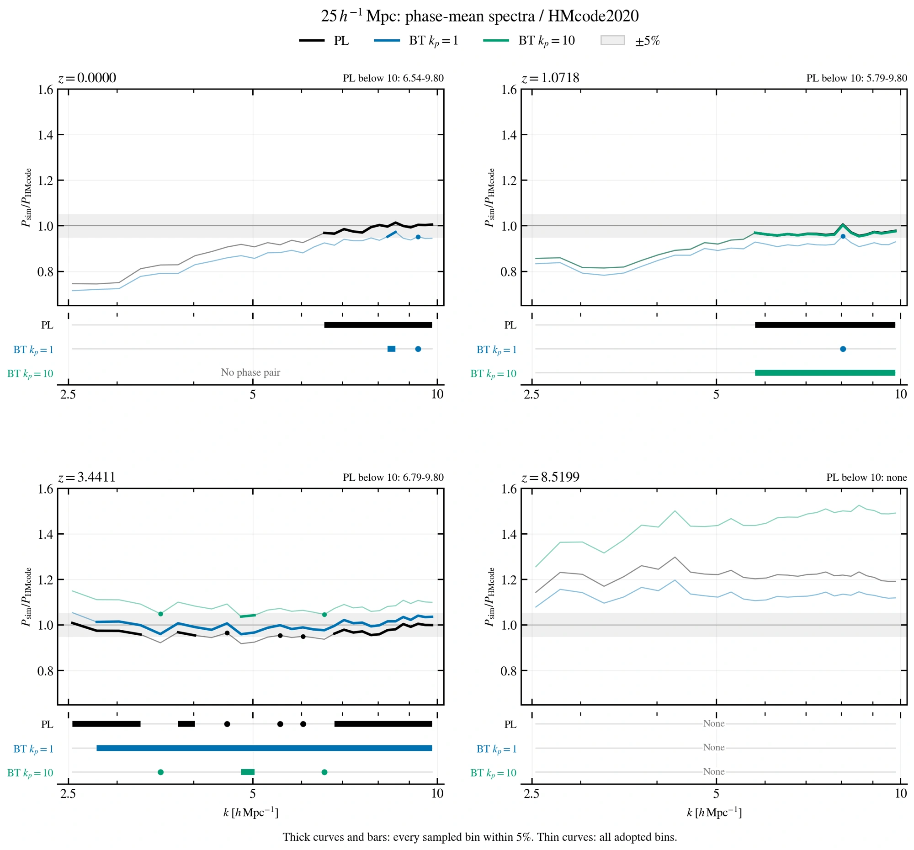
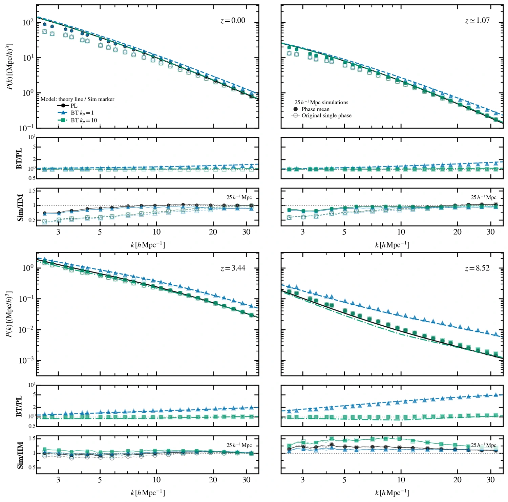

POWER SPECTRUM / DIAGNOSTICS
功率谱汇总
2026-10-23 / FIVE-PERCENT AGREEMENT
25盒：与 HMcode 的 5% 一致区间
比较四个精确红移的现有相位平均功率谱，不调整振幅，不按偏差删除数据。黑色为 PL，蓝色为 BT kp=1，绿色为 BT kp=10；每个模型都除以自己的 HMcode2020 参考。下方历史图继续保留各自日期的版本。
当前显示范围


k≤10 内的 PL 高 k 连续段
从表中起点到最后一个采样点，每个 bin 都满足 5%；这不是仅要求 RMS 小于 5%。边界使用实际 bin 中心，没有插值寻找交点。所有 k 的单位均为 h Mpc−1。
| 红移 z | k 区间 | bin 数 | 最大偏差 |
|---|---|---|---|
| 0 | 6.54–9.80 | 14 | 3.43% |
| 1.0718 | 5.79–9.80 | 17 | 4.43% |
| 3.4411 | 6.79–9.80 | 13 | 4.40% |
| 8.5199 | 无 | 0 | 不适用 |
k≤10 的放大图


固定 8≤k≤10 的最大逐点偏差
实际采用 8 个现有 bin，k=8.0457–9.8049。下表不是 RMS；— 表示当前没有该相位平均结果，没有用原始单相位替代。
| 红移 z | PL | BT kp1 | BT kp10 |
|---|---|---|---|
| 0 | 1.42% | 6.35% | — |
| 1.0718 | 4.43% | 9.14% | 4.61% |
| 3.4411 | 4.03% | 4.11% | 10.87% |
| 8.5199 | 23.33% | 14.59% | 52.58% |
如何理解这些区间
提高 k 下界后，PL 的前三个红移在 8–10 内均与 HMcode 相差不到 5%，但 BT 不普遍满足。在 z≈8.52，三个模型在完整显示范围的 118 个 bin 都不满足 5%，不是只有低 k 不匹配。
独立 CIC 窗函数修正后，PL 在固定 8–10 内的最大偏差依次为 1.79%、4.09%、3.72%、23.78%，表中前三个红移的 PL 连续段边界也保持不变。不过继续扩展到 k≈32 后，修正后的曲线不再具有全部达标的高 k 尾段。本图仍保留当前 NGP 口径，没有将 CIC 诊断替换进正式数据。
这些是与参考谱的一致区间，不是已证明的模拟可信区间。相邻采样点达标也不保证其间任意 k 都达标。HMcode2020 的主要公开精度检验覆盖 k 约不超过 10、z 约不超过 2；高红移和 BT 形状不能直接套用其精度结论。模拟的有限体积、力与粒子分辨率，以及模型外推仍需独立验证。HMcode2020 原论文
2026-10-20 / FOUR REDSHIFTS · 25 BOX ONLY
25盒：四个红移的功率谱
只保留25 h−1 Mpc盒子，依次比较z=0、z≈1.07、z≈3.44和z≈8.52。黑色为PL，蓝色为BT kp=1，绿色为BT kp=10。实心点是原相位与反相位功率谱的平均；浅色空心点是未经平均的原始单相位数据。主面板曲线是各模型自己的HMcode2020参考，不是统一除以PL参考。

新增kp1红移零 PNGz≈8.52 原相位与反相位核对 PNG旧论文与当前参考谱对照 PNG窄横轴线性版 PNG窄横轴对数版 PNG旧论文格式：Sim/HM对数 PNG不含原始对照的线性版 PNG原始与平均：宽坐标版 PNG10月16日收紧坐标版 PNG


kp1反相模拟已到z=0，左上角新增其原相位与反相位的算术平均，并与已有PL平均谱计算BT/PL。kp1在四个红移的平均谱现已全部就绪。kp10的z=0平均谱仍未完成，因此该处只保留其浅色原始单相位点。新结果沿用1024³ NGP和当前已核查的kp1 HMcode参考，没有调整振幅或按与参考的偏差删点。
kp1在z=0的原相位重测与旧缓存最大相对差异约为0.0023%，没有对重测结果作额外修正。浅色原始对照仍沿用旧缓存，实心平均点使用本次重测的两份功率谱。
PL精确0048补跑已完成，原相位和反相位均为z=1.0717968600643704，不再将邻近时刻的原相位插值到z=1.07。现在三种模型在这个时刻的相位平均均已就绪，因此同时显示两个BT/PL平均比值。此前新增的kp1在z=3.4410805658271206及kp10在精确0048时刻的平均谱继续保留。本节是10月20日更新，后面的两盒汇总和历史单图仍保留各自日期的版本。
原始数据来自旧模拟的功率谱缓存，没有恢复旧HMcode参数。原始与平均结果使用相同的当前参考和显示范围，符号疏密沿用旧绘图脚本。模拟仍按10kf≤k≤0.25kNy选点，实际点覆盖2.5367至31.9198 h Mpc−1，全部位于新的坐标范围内。收紧坐标不改变选点标准，也不代表这个范围已经通过收敛验证。没有根据Sim/HM偏差删点。
在z=8.519850605215494、k≈10.05 h Mpc−1，PL的原相位/HM为1.199、相位平均/HM为1.194；kp1为1.118与1.122；kp10为1.501与1.495。三者都使用同一模型、同一红移的参考谱。因此，这里的高红移差异不是反相平均新增的。kp1和kp10的旧原相位缓存与本次重测也在约10−8相对精度内一致。
另外，直接读取论文保存的旧图数据表，并重算旧绘图脚本，HMcode数值与旧表在约10−10相对精度内一致。旧表中，z≈8.52的25盒kp10在当前显示范围的公共采样点上已高出参考约15%至45%。例如k≈10.68时，同一份原相位功率除以旧参考为1.422，除以当前参考为1.479。旧图Sim/HM采用约0.15至2的对数纵轴，视觉上压缩了偏差；本图现在使用0.3至1.6的线性纵轴，旧范围和对数版均保留供比较。z≈3.44确实更接近，两种红移不能一起概括为吻合。
旧参考还存在参数传递问题：重跑旧脚本时，HMcode实际使用Ωm=0.3、Ωb=0.05、ns=0.96，而当前参考使用模拟的0.3153、0.0493和0.9649。旧图看起来更接近并不能验证其参数设置。这个对照确定了新旧图的区别，但没有确定高红移剩余偏差的物理来源。
参考谱沿用已核查的内部模板温度和晕质量积分设置；未调整模拟振幅。尚无平均结果的模型只显示浅色原始点。新PL平均谱继续使用1024³ NGP、一次V/N散粒项扣除、不反卷积网格窗函数，并使用与其他曲线相同的已核查HMcode参考。各自的Sim/HM均使用对应模型和实际红移；未将新结果强行归一化到参考谱。
2026-10-15 / CURRENT PS · 25 & 256 BOXES
四个红移与两个盒子
采用论文的四红移布局：z=0、z≈1.07、z≈3.44、z≈8.52。黑色为PL，蓝色为BT kp=1，绿色为BT kp=10。实心符号是25盒已完成的原相位与反相位功率谱平均，空心符号是256盒的原始单相位数据，虚线是各模型的HMcode2020参考。

本图采用已核查的HMcode诊断修正：将内部平滑模板的温度与零辐射背景分开处理，并将晕质量积分下限扩展至1 h−1M⊙、使用512个积分节点。未调整模拟功率，也未采用额外的IC振幅重归一化。下方历史单图仍保留各自当时的参考谱，不能与本图视为同一版本。论文图尚未替换。
在z≈1.07，PL平均谱的实际目标为z=1.0700000000000003，其中原相位经过时间插值；BT kp1为z=1.0717968600643704。各自的Sim/HM使用各自红移，但本图不画这两份不同时刻的25盒BT/PL。z=0的BT相位平均、z≈3.44的kp1相位平均，以及z≈1.07的kp10相位平均仍未完成。